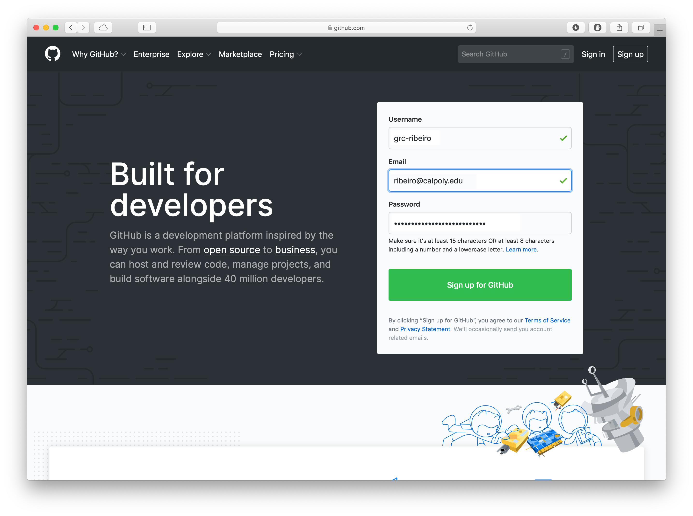

Choose a username and submit your email. (You don’t need to sign up with your Cal Poly email, and you don’t need to use your Cal Poly’s username either.)
Click on the big, green button that reads Sign up for GitHub.

Setting up GitHub Pages
If you have used GitHub Pages with this account, you need to use the same repository with the name [yourusername].github.io. In this case, skip to Publishing the first assignment on GitHub Pages
Next to Repositories. click on the green button that reads New to create a new repository.
Your new repository will be named: [yourusername].github.io, where you replace [yourusername] with your actual username. (Again, your GitHub username, not your Cal Poly’s username.)
Now that you have a repository, you get started by creating a new file.
Publishing the first assignment on GitHub Pages
All our assignments will be inside the folder grc338 in your repository. The way you create the new grc338 folder is by typing grc338 in the field that reads Name your file…. But you want to add a forward slash (/) right after that, so GitHub understands it’s a folder.
Then, you do it again with the last part of the URL in the assignment instruction. For the first assignment, it’s helloworld. Once again, you add a forward slash (/) right after that, so GitHub understands it’s a folder.
Finally you name your actual file index.html (without the forward slash, because it’s not a folder, it’s a file).